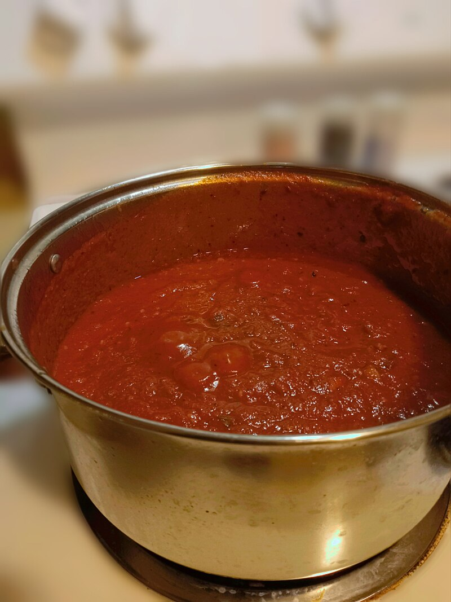

Home Page

File:Spaghetti red sauce.jpg. (2023, August 9). Wikimedia Commons. Retrieved August 6, 2025, from https://commons.wikimedia.org/w/index.php?title=File:Spaghetti_red_sauce.jpg&oldid=791587055.
Description
Homemade Red Sauce for Spaghetti, the easy way.
Ingredients
- 2 Tablespoons Olive Oil
- Chopped Garlic, Yellow Onion
- 28oz Tomato Sauce
- 28oz Chopped Tomatoes
- 6oz Tomato Paste
- 1/2 cup Italian Seasoning
- Salt, Pepper
Steps
- Combine olive oil, garlic, and onion in large sauce pan lit on low-to-medium heat. 2 minutes stiring
- Once garlic is lightly browned, add tomato sauce, chopped tomatoes, and paste. Stir until mixed.
- Add Italian Seasoning. Mix until well blended. Wait 5 minutes.
- Add salt and pepper to taste. (Roughly 1 teaspoon of each to start.)
- Keep on low heat for roughly 30-45 minutes. Add meatballs as the second side finishes cooking.
- Once meatballs are done cooking, turn off heat. Bon Appetite!